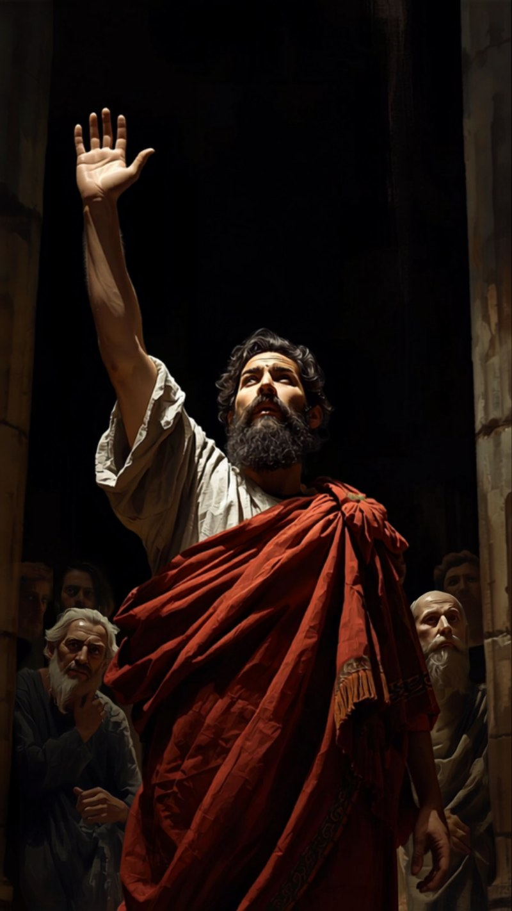
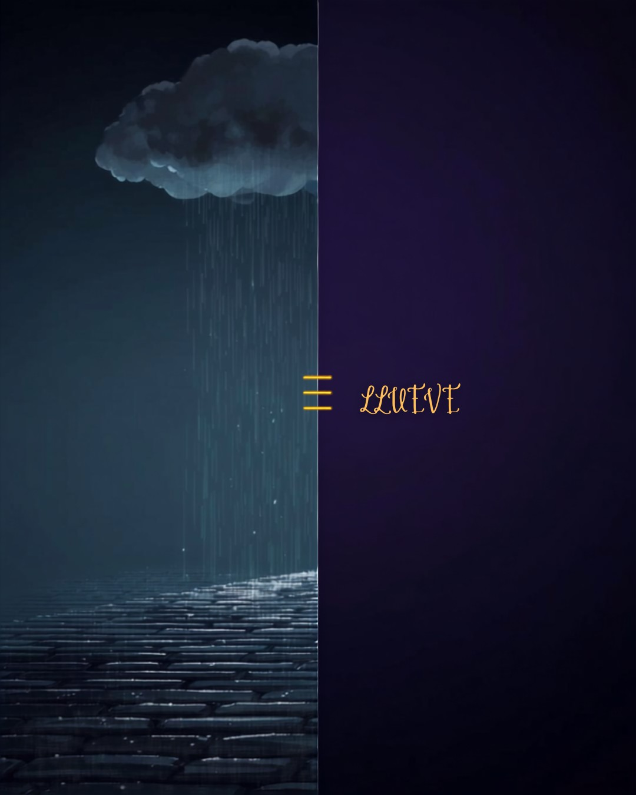
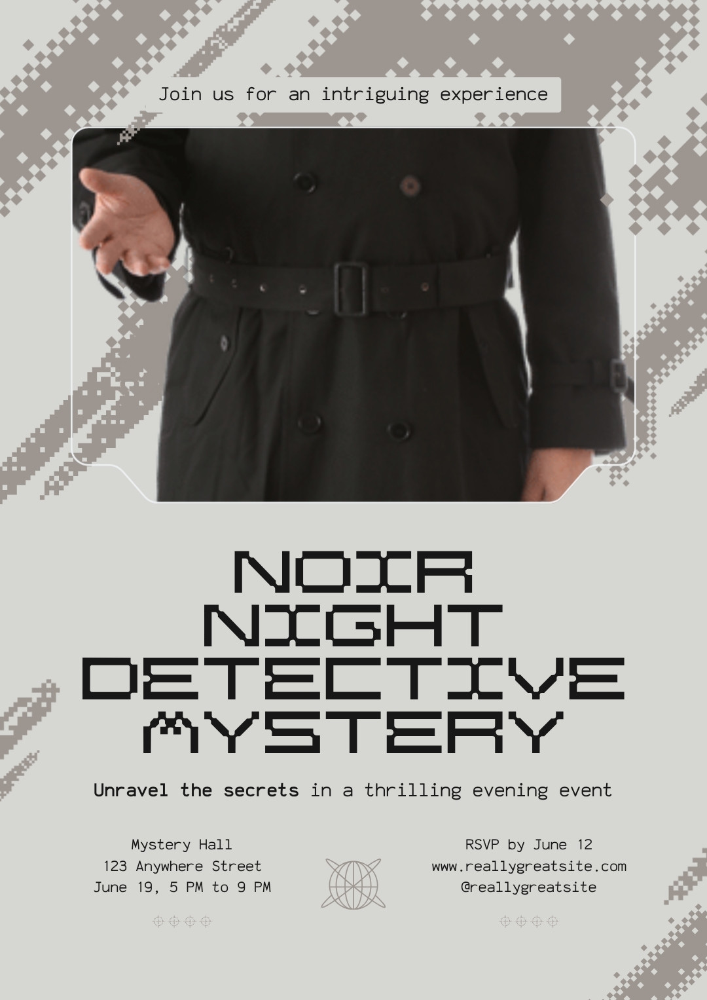

Cuando alguien nos dice "la Biblia puede ser verdad para ti, pero no para mí", el creyente suele quedarse sin palabras. Este curso cambia eso — con amor, convicción y razones sólidas.
Bloque 1
La apologética no es pelearse con nadie. Es estar listos para dar razones de nuestra fe. Pedro nos manda a hacerlo — y esa orden incluye el cómo: con mansedumbre y reverencia, no con altanería.
"Estad siempre preparados para presentar defensa con mansedumbre y reverencia ante todo el que os demande razón de la esperanza que hay en vosotros."
Definición
La disciplina que da razones para defender y explicar la fe cristiana de manera racional y respetuosa. Viene del griego apologia — "defensa". Era el término legal en los tribunales del primer siglo.
Aparece en
Hechos 22:1 · 25:16 · 1 Corintios 9:3 · Filipenses 1:7, 16 · 2 Timoteo 4:16 · 1 Pedro 3:15
Muchos piensan que creer en Dios es como creer en Santa Claus — un sentimiento bonito sin fundamento. Pero la fe bíblica nunca fue eso. Pedro dice "estad siempre preparados" — la palabra implica estudio, pensamiento, conocimiento.
Ilustración
Un doctor no solo siente que sabe medicina — lo puede demostrar. Un ingeniero no solo cree que el puente aguantará — lo calculó. Nuestra fe también tiene fundamentos sólidos.
Lo que falta no es la evidencia. Lo que falta es aprender a comunicarla.
Dos palabras clave en 1 Pedro 3:15
Preparados
Implica estudio, conocimiento, preparación activa. La apologética requiere esfuerzo intelectual.
Mansedumbre
El tono importa tanto como el contenido. La apologética es tanto actitud como argumento.
El modelo bíblico
Hechos 17:16–31 es el ejemplo apologético más completo de toda la Escritura: Pablo frente a los filósofos más sofisticados de su tiempo. Cuatro movimientos que vale la pena observar.

Pablo Apóstol
Apóstol · Filósofo cristiano · Siglo I d.C.
Fe cristiana"Varones atenienses, en todo observo que sois muy religiosos…"
Cuatro movimientos
Encuentro
Terreno común
"En todo observo que sois muy religiosos" (v. 22). No empieza condenando, empieza conectando. La apologética busca puentes, no muros.
Lenguaje
Cita sus propios poetas
"Como algunos de vuestros propios poetas también han dicho" (v. 28). Habla el idioma de su audiencia. No cita la Torá — cita a Arato y Cleantes.
Argumento
De la creación al Creador
Antes de hablar de Jesús, establece que hay un Dios personal, trascendente, que creó todo (v. 24–26). Las bases primero.
Evidencia
La resurrección como hecho
"Habiéndolo levantado de los muertos, ha dado fe a todos" (v. 31). La fe cristiana descansa en un hecho histórico verificable.
"Todos los sermones de Pedro y Pablo registrados en Hechos tienen una fuerte columna vertebral apologética. La declaración de Pablo en Hechos 17:24–31 es una obra maestra de la persuasión cristiana."
Bloque 2
Antes de defender que la fe cristiana es verdadera, es necesario estar de acuerdo en qué significa que algo sea verdadero. Si dos personas usan "verdad" con definiciones distintas, no llegarán a ningún lado.
Una afirmación es verdadera si corresponde con la realidad. Decir "está lloviendo" es verdadero solo si en efecto está lloviendo afuera.
La verdad no es lo que yo siento, ni lo que mi grupo cree, ni lo que me funciona — la verdad es lo que coincide con cómo son las cosas en realidad.
"Decir de lo que es que no es, o de lo que no es que es, es falso; mientras que decir de lo que es que es, y de lo que no es que no es, es verdadero."

Lo que Jesús asumió
"Yo soy el camino, y la verdad, y la vida" — Juan 14:6. No dice "yo soy lo que a ti te funciona". La Biblia asume, de principio a fin, que la verdad es algo objetivo, externo, que podemos conocer.
"Santifícalos en tu verdad; tu palabra es verdad" — Juan 17:17.
Aristóteles
Filósofo griego · 384–322 a.C.
Pagano / PoliteístaPor qué importa que sea pagano
Que sea un filósofo griego politeísta el que definió la verdad objetiva muestra que esta no es solo una idea "cristiana". La correspondencia entre afirmación y realidad es reconocida por la razón humana universal.
Incluso sin la Biblia, la filosofía llegó a esta conclusión. La Biblia la asume y la eleva.
Tres errores comunes
La verdad como coherencia
"Es verdad si encaja con todo lo demás que creo."
Una persona puede tener un sistema de creencias perfectamente coherente y completamente falso. Dos religiones contradictorias pueden ser internamente coherentes — pero ambas no pueden ser verdaderas a la vez.
La verdad pragmática (la más popular hoy)
"Es verdad si me funciona / si me hace sentir bien / si produce buenos resultados."
Lo que "funciona" no es lo mismo que lo que es verdadero. A un alcohólico le "funciona" emocionalmente otra cerveza — eso no la hace buena. Y hay verdades duras que no nos hacen sentir bien: un diagnóstico de cáncer no se vuelve falso porque deprima.
La verdad posmoderna
"La verdad la construye cada cultura con su lenguaje. No hay realidad objetiva."
Esa misma afirmación pretende ser verdadera para todas las culturas. Se contradice a sí misma. Y si la verdad la construye cada quien, no se puede decir que el nazismo estuvo mal — los nazis simplemente "construyeron" una verdad distinta.
Bertrand Russell
Filósofo y matemático · 1872–1970
Ateo declaradoUn ateo que nos da la razón
"El concepto de verdad como algo que depende de hechos en gran medida fuera del control humano ha sido una de las formas en que la filosofía ha inculcado el elemento necesario de humildad. Cuando se elimina este freno, se da un paso más en el camino hacia cierto tipo de locura: la intoxicación con el poder."
Lo que Russell está diciendo
Cuando una sociedad abandona la idea de verdad objetiva, no se vuelve más libre — se vuelve más tiránica. La verdad objetiva nos obliga a someternos a algo más grande que nosotros. Si "yo construyo mi verdad", el más fuerte impone la suya.
Defender la verdad objetiva no es arrogancia — es lo más humilde que se puede hacer: reconocer que hay algo más grande que yo a lo que tengo que ajustarme.
Bloque 3 · Táctica
En la caricatura, el Coyote persigue al Correcaminos hasta el borde del acantilado. El Correcaminos frena de golpe. El Coyote sigue corriendo, queda suspendido en el aire un segundo… y se da cuenta de que no hay piso debajo. Cae.
La táctica hace lo mismo: muestra que la afirmación contraria al cristianismo no tiene piso — se destruye a sí misma.
La regla — voltear la afirmación sobre sí misma
Cuando alguien hace una afirmación, la pregunta es: ¿esta afirmación cumple su propio criterio? Muchas afirmaciones del relativismo moderno son autocontradictorias.
| Lo que dicen | Cómo responder (Correcaminos) |
|---|---|
| "No existe la verdad absoluta." | ¿Eso que acabas de decir es una verdad absoluta? Si lo es, te contradices. Si no lo es, no tengo por qué creerte. |
| "Toda verdad es relativa." | ¿Esa afirmación es relativa o absoluta? Si es absoluta, te contradices. Si es relativa, vale solo para ti. |
| "No se puede conocer nada con certeza." | ¿Estás seguro de eso? |
| "Solo creo lo que la ciencia puede probar." | ¿Puedes probar científicamente esa afirmación? La afirmación misma es filosófica, no científica. |
| "No me impongas tu moral." | ¿No es eso una imposición moral tuya sobre mí — la moral de "no imponer"? |
Plausibilidad
El islam es plausible en Irán. El ateísmo es plausible en una universidad europea. La presión social no es prueba de verdad.
Credibilidad
Una creencia puede ser muy plausible (todos a tu alrededor la creen) y completamente falsa. La tarea no es seguir lo que se siente normal — es seguir lo que es verdadero.
Bloque 4 · Táctica
El detective Colombo de la serie de TV nunca acusaba directamente. Llegaba a la escena del crimen con su gabardina arrugada, parecía despistado, y simplemente hacía preguntas: "Disculpe, señora… solo una cosita más…" Y con cada pregunta, el sospechoso se enredaba solo.

Greg Koukl
Apologista · Fundador de Stand to Reason
Fe cristianaNo atacar, no debatir — solo preguntar. Al preguntar, le devuelves a la otra persona la responsabilidad de defender lo que dice.
Pregunta 1
"¿Qué quieres decir con eso?"
Para clarificar. Antes de responder, entiende bien lo que te dicen. Muchas veces la objeción se deshace sola cuando la persona trata de explicarla. Los términos vagos ("la ciencia", "la religión", "todos los cristianos") esconden errores grandes.
Pregunta 2
"¿Cómo llegaste a esa conclusión?"
Para que defiendan su posición. Muchas creencias populares no tienen fundamento cuando se examinan. Esta pregunta invierte la carga de la prueba sin agresividad: ahora ellos tienen que mostrar evidencia, no tú.
Ejemplo en la práctica
Así se ve la diferencia entre responder con y sin la táctica.
Sin la táctica — respuesta típica
Te pones a la defensiva. Intentas recordar respuestas que oíste alguna vez. Terminas inseguro. La conversación se vuelve un debate emocional donde nadie gana.
Con la táctica de Colombo
Ellos
"La Biblia está llena de contradicciones."
Nosotros
"Interesante. ¿Qué entiendes tú por contradicción?"
Ellos
[escuchas]
Nosotros
"¿Puedes darme un ejemplo específico?"
Nosotros
"¿Cómo llegaste a la conclusión de que eso es una contradicción y no, por ejemplo, dos descripciones distintas del mismo evento?"
Resultado casi siempre
A — No hay ejemplo concreto
Repitió algo que oyó sin pensarlo. La pregunta lo revela gentilmente.
B — Ejemplo sin fundamento
Tiene algo en mente que ya tiene respuesta conocida. Ahora se puede investigar juntos.
C — Ejemplo real
Hay algo específico. Ahora tienen una conversación honesta, no un debate emocional.
Las afirmaciones hechas sin evidencia pueden ser respondidas sin evidencia. Pero la táctica de Colombo es mejor: las examina junto con la persona. El objetivo no es ganar — es ayudar a pensar.
Bloque 5 · Discusión
Piensa en una conversación real donde alguien te haya dicho "eso es tu verdad" o algo similar. ¿Cómo respondiste? ¿Cómo lo responderías ahora?
Practica las dos preguntas de Colombo con alguien del grupo.Bloque 6 · Cierre
Douglas Groothuis
Filósofo cristiano · Denver Seminary
Fe cristiana"Muchos no creyentes nunca consideran seriamente los argumentos a favor del cristianismo simplemente porque son despreocupados de la verdad. Buscar la verdad requiere evitar la pereza, cultivar la estudiosidad, y resistir la tentación de las desviaciones que la evitan."
Humildad
Admitir que puedo estar equivocado. La verdad es más grande que yo.
Valentía
Estar dispuesto a cambiar de opinión cuando la evidencia lo exige.
Honestidad personal
No esconderse detrás de excusas. Seguir la evidencia donde lleve.
Tarea de la semana
Memoriza 1 Pedro 3:15 (RVR1960). No el concepto — las palabras exactas.
Identifica a UNA persona en tu vida que duda de la fe o que ha dicho "eso es tu verdad". No le hables todavía. Solo piénsala. Ora por ella.
Practica las dos preguntas de Colombo en una conversación normal esta semana — con un amigo, en el trabajo, en casa. No es para discutir, es para que se vuelva natural preguntar antes de responder.
Oración sugerida de cierre
"Señor, gracias porque tu verdad no depende de lo que nadie piense — ni siquiera de lo que nosotros pensemos. Tú eres la verdad, y nosotros somos los que tenemos que ajustarnos a ti, no al revés. Hoy empezamos a aprender a defender lo que creemos. Danos valor para hacerlo, inteligencia para hacerlo bien, y sobre todo amor — porque sin amor, todo lo que digamos sonará a ruido. En el nombre de Jesús, amén."
"Estad siempre preparados para presentar defensa con mansedumbre y reverencia…"
1 Pedro 3:15 · RVR1960Apéndice
Respuestas sugeridas para las preguntas que más surgen. No para memorizar — para pensar.
"Eso es lo que a ti te enseñaron, pero en otras culturas creen cosas distintas."
Exactamente. Y esas culturas distintas no pueden tener todas la razón si sus creencias se contradicen entre sí. La diversidad de creencias no prueba que todas sean igualmente verdaderas — igual que la diversidad de diagnósticos médicos no significa que todos sean correctos. Hay un diagnóstico correcto, y vale la pena buscarlo.
"Yo solo creo lo que la ciencia puede probar."
¿Puedes probar eso científicamente? Esa afirmación misma no es científica, es filosófica. La ciencia es una herramienta extraordinaria, pero hay preguntas ("¿por qué hay algo en lugar de nada?", "¿qué es el bien?", "¿soy más que mis átomos?") que la ciencia no puede responder. Limitar el conocimiento solo a lo científico es como decir que solo existe lo que se puede pesar en una balanza.
"La religión es personal, no deberías imponérsela a nadie."
Nadie aquí quiere imponerle nada a nadie. Compartir razones no es imposición, es diálogo. Los médicos no "imponen" el diagnóstico — explican la realidad. Si el evangelio es verdad, amar es compartirlo. Si no lo es, no vale la pena defenderlo. La pregunta verdadera no es si compartirlo, sino si es verdadero.
"No me gusta hablar de religión, es muy personal."
Totalmente válido. Pero igual que uno puede hablar de medicina, de historia o de filosofía sin que sea una agresión, hablar de Dios también puede ser una conversación intelectual honesta. Y eso es exactamente lo que este curso enseña a hacer.
"Están queriendo debatir a la gente en lugar de amarla."
Al contrario — la apologética es un acto de amor. Si un amigo tuviera cáncer y no lo supiera, ¿amarlo significaría no decirle nada? El apóstol Pablo razonaba con la gente en las sinagogas (Hechos 17:17). La verdad sin amor es brutalidad; el amor sin verdad es sentimentalismo. Necesitamos las dos.
"¿El cristianismo es 'la verdad' y todas las otras religiones están equivocadas? Eso suena arrogante."
Si Jesús resucitó de los muertos como dice la Biblia, entonces sí — las afirmaciones contrarias del islam, del budismo o del ateísmo no pueden ser verdaderas a la vez. Pero lo que es arrogante no es afirmar que algo es verdad. Lo arrogante sería afirmarlo sin evidencia. Por eso este curso no se trata de imponer, se trata de examinar. Si al final no hay evidencia, deberíamos abandonarlo. Si la hay, deberíamos seguirla.
"La apologética no es ganar argumentos. Es abrir puertas."